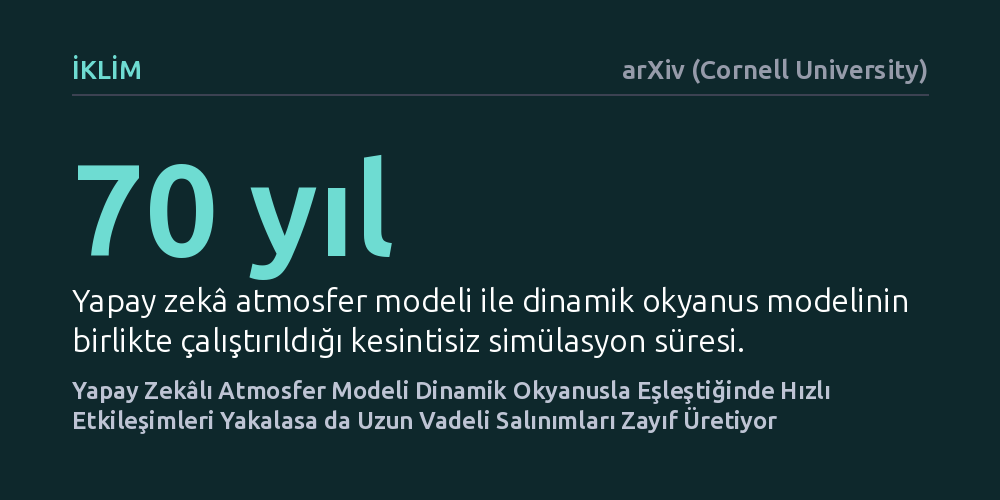

IKLIM · arXiv (Cornell University) · 2026-10-22
Araştırmacılar, makine öğrenimi tabanlı bir atmosfer modelini dinamik okyanus modeliyle eşleştirerek 70 yıllık iklim simülasyonları gerçekleştirdi. Sistem hızlı hava-deniz etkileşimlerini başarıyla yakalarken, El Niño benzeri uzun vadeli iklim salınımlarını ve sera gazı tepkilerini gerçekçi biçimde üretemedi.
Hava tahminlerinde başarılı olan yapay zekâ modellerinin, okyanusla birleştirildiğinde doğrudan uzun vadeli iklim tahminleri yapmaya henüz hazır olmadığını gösteriyor.

Son yıllarda makine öğrenimi tabanlı atmosfer modelleri, birkaç günlük hava durumu tahminlerinde geleneksel fizik modelleriyle yarışacak hatta onları geride bırakacak düzeyde yüksek başarı gösterdi. Ancak kısa vadeli hava tahmini ile onlarca yıla yayılan iklim modellemesi arasında temel bir fiziksel ayrım bulunuyor. Hava durumu büyük ölçüde atmosferin o anki dinamiklerine dayanırken; iklim sistemi, atmosfer ile derin okyanuslar, buzullar ve kara kütleleri arasındaki yavaş ısı ve enerji alışverişiyle belirleniyor.
Yazarların da ifade ettiği gibi, "hızlı atmosferik değişkenliğin yavaş iklim değişkenliğini ve duyarlılığını nasıl şekillendirdiğini anlamak, Yer sistemi biliminde temel bir zorluk olmayı sürdürüyor." Yapay zekâ modellerinin hava tahminlerindeki başarısının, okyanusla sürekli etkileşim hâlinde olan kapalı bir iklim sistemine doğrudan taşınıp taşınamayacağı şimdiye kadar neredeyse hiç test edilmemişti. Bu çalışma, yapay zekânın iklim fiziğini gerçekten öğrenip öğrenmediğini anlamak açısından kritik bir soruya odaklanıyor.
Araştırmacılar bu soruyu yanıtlamak amacıyla hibrit bir modelleme yapısı geliştirdi. Atmosfer bileşeni olarak makine öğrenimiyle çalışan ACE2 emülatörü kullanılırken, okyanus bileşeni olarak okyanusun tüm derinlik fiziğini hesaplayan dinamik NEMO modeli sisteme entegre edildi. Bu iki model, hava ile deniz arasındaki ısı ve kütle transferini anlık olarak paylaşacak şekilde birbirine bağlandı. Bu deney, makine öğrenimiyle çalışan bir atmosferin tam derinlikli dinamik bir okyanusla onlarca yıllık etkileşimini inceleyen ilk çalışmalardan birini temsil ediyor.
Araştırma ekibi, 1950 ile 2020 yılları arasındaki dönemi kapsayan 70 yıllık iki farklı simülasyon grubu yürüttü. İlk grupta tarihsel sera gazı ve dış etkenler zamana bağlı olarak modele verilirken, ikinci grupta 1950 koşullarının sabit tutulduğu kontrol simülasyonları gerçekleştirildi. Elde edilen hibrit sonuçlar, tamamen aynı NEMO okyanus bileşenine sahip olan ancak atmosferi geleneksel fizik denklemleriyle hesaplayan EC-Earth küresel iklim modelinin simülasyonlarıyla doğrudan kıyaslandı.
Simülasyon çıktıları, yapay zekâ destekli sistemin neleri başarabildiğini ve nerelerde tıkandığını net şekilde gösterdi. Model, tropikal Pasifik bölgesinde okyanus ile atmosfer arasında günler ve haftalar ölçeğinde gerçekleşen hızlı hava-deniz eşleşmesini son derece gerçekçi biçimde yakaladı. Ancak sistemin ürettiği çok yıllık döngüler incelendiğinde, ortaya çıkan tablonun gerçek dünyayla uyuşmadığı görüldü.
Özellikle küresel hava modellerini belirleyen El Niño benzeri iklim salınımları, modelde son derece düşük genlikli ve gerçek dışı bir dalgalanma sergiledi. Araştırmacılar bu zayıflığın, yapay zekânın tropikal Pasifik üzerindeki atmosferik geri besleme mekanizmalarını yeterince güçlü yansıtamamasından kaynaklandığını belirledi. Benzer şekilde, atmosferdeki karbondioksit artışına verilen iklim tepkisi başlangıçta fiziksel modelle uyumlu ilerlese de, yapay zekânın yüzeye inen kısa dalga güneş ışınımını eksik hesaplaması nedeniyle zamanla beklenen iklim seyrinden saptı.
Elde edilen bulgular, hava durumu tahminlerinde çok başarılı olan yapay zekâ emülatörlerinin, okyanusla eşleşen uzun vadeli iklim modellerinde henüz doğrudan kullanılamayacağını gösteriyor. Atmosfer tek başına çalışırken fark edilmeyen küçük sistematik hatalar, okyanus gibi yavaş tepki veren dinamik bir bileşenle birleştiğinde birikerek iklim salınımlarını ve enerji dengesini bozabiliyor.
Bu sonuçlar yapay zekânın iklim bilimindeki değerini ortadan kaldırmıyor; aksine, bu modellerin hangi noktalarda geliştirilmesi gerektiğini somutlaştırıyor. Gelecek nesil Yer sistemi modellerinde yapay zekâ bileşenlerinin yer alabilmesi için, modellerin yalnızca geçmiş hava verilerini istatistiksel olarak taklit etmesi yetmeyecek; güneş ışınımı dengesi ve atmosferik geri beslemeler gibi temel korunum yasalarına daha sıkı şekilde uyması gerekecek.